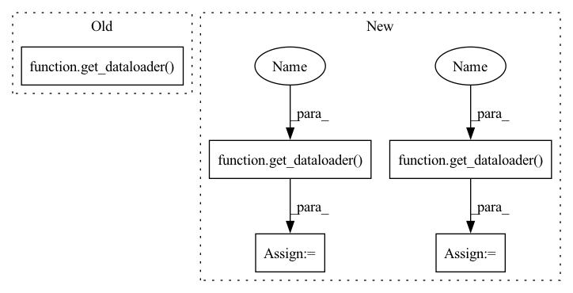

Pattern ID :29367
Before Change
output_folder = os.path.join(dataset_cfg["OUT_PATH"], "models")
os.makedirs(output_folder, exist_ok=True)
train_dataloader, val_dataloader, node_feat, labels = get_dataloader( dataset_cfg, graph_data)
num_train_optimization_steps = (int(len(train_dataloader) + dataset_cfg["GRADIENT_ACCUMULATION_STEPS"] - 1)
/ dataset_cfg["GRADIENT_ACCUMULATION_STEPS"]) * dataset_cfg["EPOCHS"]
model = init_model(model_cfg, device)After Change
graph, labels, train_nid, val_nid, test_nid, node_feats = graph_data
graph = dgl.remove_self_loop(graph)
val_dataloader = get_dataloader(dataset_cfg , graph, val_nid, drop=False)
train_num = math.ceil(len(train_nid) / dataset_cfg["BATCH_SIZE"])
num_train_optimization_steps = (int(train_num + dataset_cfg["GRADIENT_ACCUMULATION_STEPS"] - 1)
/ dataset_cfg["GRADIENT_ACCUMULATION_STEPS"]) * dataset_cfg["EPOCHS"]
model = init_model(model_cfg, device)
logging.info("Model = %s", str(model))
logging.info("Model config = %s", str(dict(model_cfg)))
logging.info("Dataset config = %s", str(dict(dataset_cfg)))
logging.info("Optimizer config = %s", str(dict(optimizer_cfg)))
logging.info("Criterion config = %s", str(dict(criterion_cfg)))
logging.info("Training parameters = %d", sum(p.numel() for p in model.parameters() if p.requires_grad))
logging.info("Model parameters = %d", sum(p.numel() for p in model.parameters()))
logging.info("Num steps = %d", num_train_optimization_steps * dataset_cfg["GRADIENT_ACCUMULATION_STEPS"])
optimizer = prep_optimizer(optimizer_cfg, model, num_train_optimization_steps)
criterion = prep_criterion(criterion_cfg, device)
global_step = 0
best_record = {"epoch": -1, "train loss": -1, "train acc": 0.0, "val loss": -1, "val acc": 0.0}
for epoch in range(dataset_cfg["EPOCHS"]):
train_dataloader = get_dataloader(dataset_cfg , graph, train_nid, drop=True)
tr_loss, tr_acc, global_step = train_epoch(epoch, model, train_dataloader, dataset_cfg, node_feats, labels,
optimizer, criterion, device, global_step)
logging.info("Train Epoch %d/%s Finished | Train Loss: %f | Train Acc: %f", epoch + 1,In pattern: SUPERPATTERN
Frequency: 3
Non-data size: 5
Instances Fragment ID: 86247332
Project Name: langgege-cqu/maxp_dgl
Commit Name: f1f10fccf1844722311242e00bfefcc9f4d1caf6
Time: 2021-11-21
Author: 8747734+bugczw@user.noreply.gitee.com
File Name: maxp_model_czw/train_yaml.py
M Class Name: AnonimousClass
N Class Name: AnonimousClass
M Method Name: train(6)
N Method Name: train(4)
M Parent Class:
N Parent Class:
M File Name: maxp_model_czw/train_yaml.py
N File Name: maxp_model_czw/train_yaml.py
M Start Line: 212
M End Line: 256
N Start Line: 216
N End Line: 265
Before Change
num_embeddings = args.num_embeddings
// TODO add CriteoIterDataPipe support and add random_dataloader arg
iterator = iter(get_dataloader( args, backend) )
eb_configs = [
EmbeddingBagConfig(After Change
args.num_embeddings = None
// TODO add CriteoIterDataPipe support and add random_dataloader arg
train_dataloader = get_dataloader( args, backend, "train")
val_dataloader = get_dataloader( args, backend, "val")
test_dataloader = get_dataloader(args, backend, "test")
// Sets default limits for random dataloader iterations when left unspecified.
if args.in_memory_binary_criteo_path is None: Fragment ID: 86247396
Project Name: facebookresearch/torchrec
Commit Name: 46f6aa6a827299037c1f1827f54e929344022d87
Time: 2021-11-30
Author: rahulkindi@fb.com
File Name: torchrec/examples/dlrm/dlrm_main.py
M Class Name: AnonimousClass
N Class Name: AnonimousClass
M Method Name: main(1)
N Method Name: main(1)
M Parent Class:
N Parent Class:
M File Name: torchrec/examples/dlrm/dlrm_main.py
N File Name: torchrec/examples/dlrm/dlrm_main.py
M Start Line: 117
M End Line: 189
N Start Line: 298
N End Line: 374
Before Change
output_folder = os.path.join(dataset_cfg["OUT_PATH"], "models")
os.makedirs(output_folder, exist_ok=True)
train_dataloader, val_dataloader, node_feat, labels = get_dataloader( dataset_cfg, graph_data)
num_train_optimization_steps = (int(len(train_dataloader) + dataset_cfg["GRADIENT_ACCUMULATION_STEPS"] - 1)
/ dataset_cfg["GRADIENT_ACCUMULATION_STEPS"]) * dataset_cfg["EPOCHS"]
model = init_model(model_cfg, device)After Change
os.makedirs(output_folder, exist_ok=True)
graph, labels, train_nid, val_nid, test_nid, node_feats = graph_data
graph = dgl.remove_self_loop(graph)
val_dataloader = get_dataloader( dataset_cfg, graph, val_nid, drop=False)
train_num = math.ceil(len(train_nid) / dataset_cfg["BATCH_SIZE"])
num_train_optimization_steps = (int(train_num + dataset_cfg["GRADIENT_ACCUMULATION_STEPS"] - 1)
/ dataset_cfg["GRADIENT_ACCUMULATION_STEPS"]) * dataset_cfg["EPOCHS"]
model = init_model(model_cfg, device)
logging.info("Model = %s", str(model))
logging.info("Model config = %s", str(dict(model_cfg)))
logging.info("Dataset config = %s", str(dict(dataset_cfg)))
logging.info("Optimizer config = %s", str(dict(optimizer_cfg)))
logging.info("Criterion config = %s", str(dict(criterion_cfg)))
logging.info("Training parameters = %d", sum(p.numel() for p in model.parameters() if p.requires_grad))
logging.info("Model parameters = %d", sum(p.numel() for p in model.parameters()))
logging.info("Num steps = %d", num_train_optimization_steps * dataset_cfg["GRADIENT_ACCUMULATION_STEPS"])
optimizer = prep_optimizer(optimizer_cfg, model, num_train_optimization_steps)
criterion = prep_criterion(criterion_cfg, device)
global_step = 0
best_record = {"epoch": -1, "train loss": -1, "train acc": 0.0, "val loss": -1, "val acc": 0.0}
for epoch in range(dataset_cfg["EPOCHS"]):
train_dataloader = get_dataloader( dataset_cfg, graph, train_nid, drop=True)
tr_loss, tr_acc, global_step = train_epoch(epoch, model, train_dataloader, dataset_cfg, node_feats, labels,
optimizer, criterion, device, global_step)
logging.info("Train Epoch %d/%s Finished | Train Loss: %f | Train Acc: %f", epoch + 1, Fragment ID: 86247333
Project Name: langgege-cqu/maxp_dgl
Commit Name: f1f10fccf1844722311242e00bfefcc9f4d1caf6
Time: 2021-11-21
Author: 8747734+bugczw@user.noreply.gitee.com
File Name: maxp_model_czw/train_yaml.py
M Class Name: AnonimousClass
N Class Name: AnonimousClass
M Method Name: train(6)
N Method Name: train(4)
M Parent Class:
N Parent Class:
M File Name: maxp_model_czw/train_yaml.py
N File Name: maxp_model_czw/train_yaml.py
M Start Line: 212
M End Line: 256
N Start Line: 216
N End Line: 265